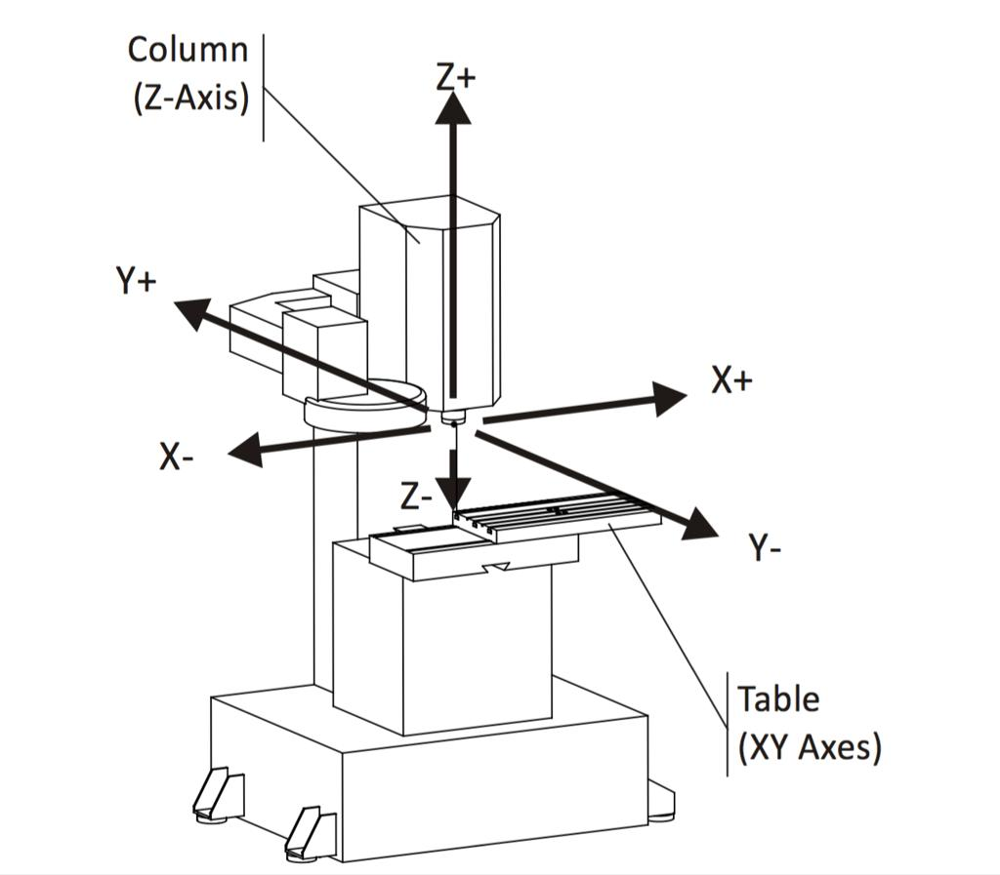
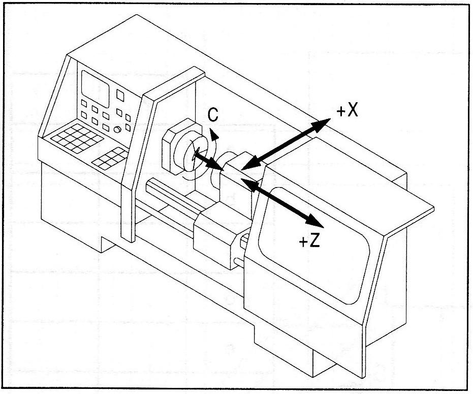
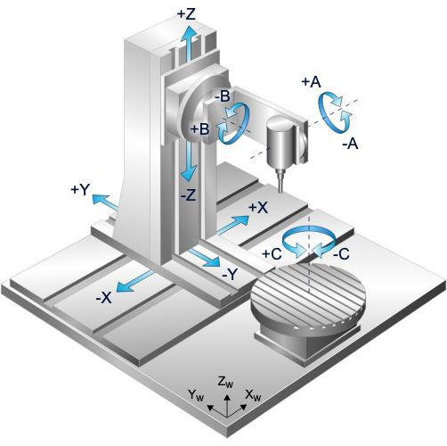
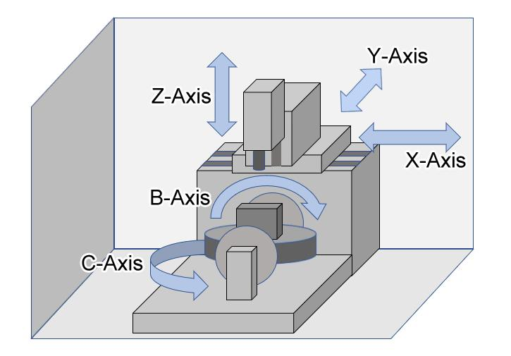
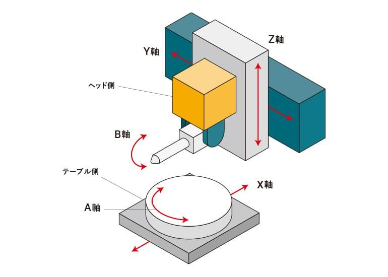
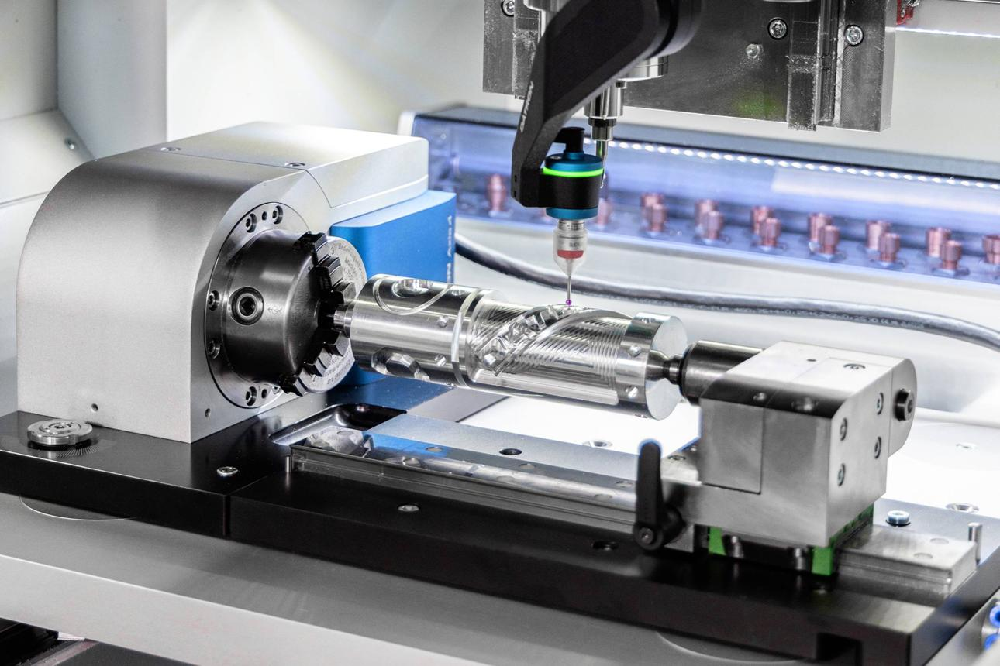
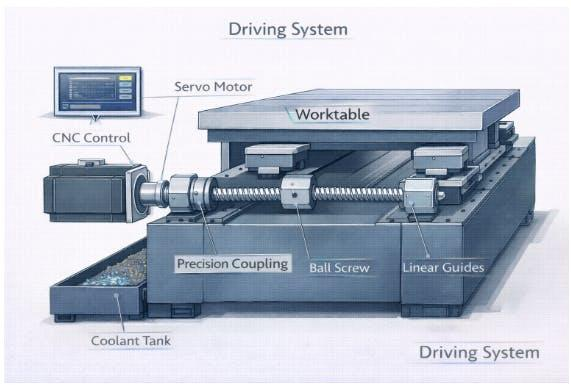
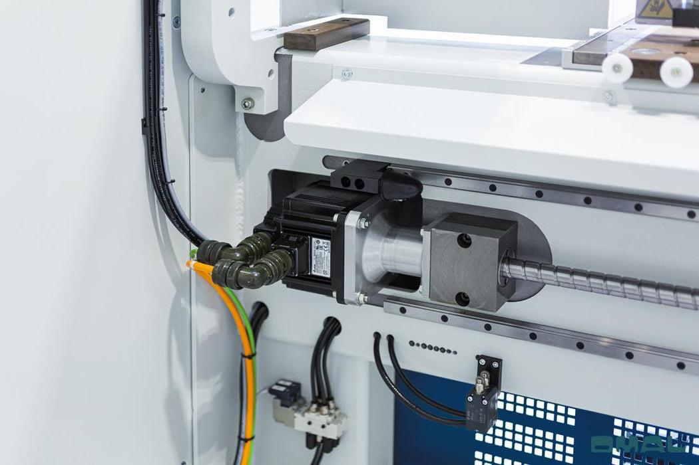
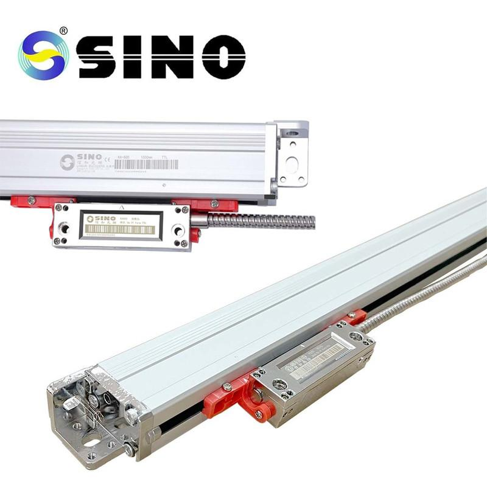

02_Axes - Axes
1. Definition of a CNC axis
A CNC axis is a controlled degree of freedom that determines the position or orientation of a machine tool, workpiece, or another machine component.
A CNC controller commands axes to move along a defined path. Servo drives and motors generate the movement, feedback devices measure actual position, and the controller corrects deviations.
Examples:
- X-axis: Linear movement along the machine's X direction.
- Y-axis: Linear movement along the machine's Y direction.
- Z-axis: Linear movement along the machine's Z direction.
- A-axis: Rotation about the X-axis.
- B-axis: Rotation about the Y-axis.
- C-axis: Rotation about the Z-axis.
A machine's axis naming and positive directions depend on machine-tool conventions and the manufacturer's configuration. The letters are a standard convention, not a guarantee that every machine physically moves in the same direction.
2. Linear axes
Linear axes provide straight-line movement, usually measured in millimetres or inches.



8
2.1 X-axis
The X-axis provides linear movement along the machine's X direction.
Typical applications:
- Horizontal movement of a machining-centre table or spindle assembly.
- Radial movement of a CNC lathe tool toward or away from the spindle centreline.
- Movement of a gantry-mounted machining head.
On many CNC lathes, X controls the radial tool position. Depending on the controller's programming convention, X coordinates may represent diameter or radius.
2.2 Y-axis
The Y-axis provides movement along the machine's Y direction.
Typical applications:
- Machining-centre table or spindle movement.
- Off-centre milling, drilling and boring.
- Movement of a machine head across a workpiece.
Some CNC lathes have a Y-axis for milling and drilling features away from the spindle centreline. Many conventional two-axis lathes do not have one.
2.3 Z-axis
The Z-axis is conventionally associated with the spindle axis on many machine tools.
Typical applications:
- Vertical movement of a machining-centre spindle.
- Axial movement of a lathe tool along the workpiece.
- Drilling, boring and facing operations.
On a lathe, Z commonly represents movement parallel to the spindle axis. The sign of the direction depends on the machine's coordinate convention.
2.4 Machine-dependent axis directions
The physical component that moves depends on machine construction.
For example, on a vertical machining centre, the spindle assembly may move in Z while the table moves in X and Y. On another design, the table may provide some or all of these movements.
The CNC controller works with configured machine coordinates. It does not require the workpiece itself to move for an axis movement to occur.
3. Rotary axes
Rotary axes provide angular movement, usually measured in degrees.
| Axis | Conventional rotation axis | Typical application |
|---|---|---|
| A | About X | Tilting table or head |
| B | About Y | Tilting table or head |
| C | About Z | Rotary table or spindle orientation |



11
3.1 A-axis
The A-axis rotates about the X-axis.
It may tilt a workpiece or a spindle head to provide access to angled surfaces.
3.2 B-axis
The B-axis rotates about the Y-axis.
It may be implemented as a tilting table, tilting head or another rotary mechanism, depending on machine architecture.
3.3 C-axis
The C-axis rotates about the Z-axis.
Applications include:
- Rotary-table positioning.
- Angular indexing of a workpiece.
- Contour machining around a rotational axis.
- Controlled spindle orientation on suitable machines.
A rotary axis may have limited travel, such as a specified angular range, or support continuous rotation. Its usable range and wrap-around behaviour depend on the mechanical design and CNC configuration.
3.4 Additional axes: U, V and W
U, V and W commonly represent additional linear axes parallel to X, Y and Z, respectively.
They may be used for secondary slides or other machine-specific movements. Their exact meanings depend on the controller and machine builder.
4. Axis configurations and machine types
The number of axes describes the controlled degrees of freedom, not necessarily the number of motors installed.
| Machine configuration | Typical axes | Example application |
|---|---|---|
| 2-axis CNC lathe | X, Z | Turning, facing, boring |
| 3-axis machining centre | X, Y, Z | Milling, drilling, pocketing |
| 4-axis machining centre | X, Y, Z plus A, B or C | Machining multiple sides using a rotary axis |
| 5-axis machining centre | Three linear and two rotary axes | Complex surfaces, angled holes and multi-face machining |
| Multi-axis lathe | X, Z, and potentially Y, C, B or other configured axes | Turning and milling in one setup |
These are typical configurations, not rigid rules. Some machines have more axes, additional spindles or special kinematics.
4.1 Three-axis machining
A three-axis machine controls X, Y and Z.
It can position the tool in three-dimensional space, but the tool orientation is generally constrained by the machine's spindle arrangement.
4.2 Four-axis machining
A fourth axis adds a controlled rotary degree of freedom.
For example, a rotary table can index a component to different angular positions so that several faces can be machined without manually repositioning the workpiece.
4.3 Five-axis machining
A typical five-axis machining centre has three linear axes and two rotary axes.
The additional rotary axes allow the tool or workpiece to change orientation.
Two common operating methods are:
- Indexed 3+2 machining: The rotary axes position and hold the workpiece or head at an angle while the three linear axes perform the cutting path.
- Simultaneous five-axis machining: Linear and rotary axes move together during the cutting operation to maintain the required tool path and orientation.
Simultaneous movement requires coordinated interpolation and suitable machine kinematics. It is not simply five independent motors moving at once.
5. Machine coordinates, work coordinates and tool coordinates
One of the most important CNC concepts is that machine position, workpiece position and tool position are related but are not the same thing.
5.1 Machine coordinate system
The machine coordinate system is the reference frame established by the machine's configuration and reference procedure.
It defines positions relative to the machine's reference system.
5.2 Machine zero and reference position
These terms are related but should not be treated as interchangeable.
- Machine zero: The defined origin of the machine coordinate system.
- Reference position: A known position used to establish or verify the axis reference.
- Home position: A commonly used term for the machine's reference location or a designated parking position. Its exact meaning varies by controller and machine builder.
A reference-return operation establishes the axis's machine reference according to the configured procedure. It does not automatically establish the workpiece's zero.
5.3 Work coordinate system
The work coordinate system defines the coordinate origin used to program the part.
For example, the programmer may define the top-left corner of a fixture or the centre of a component as the work zero.
Common CNC controllers use work-offset systems such as G54, G55 and others, although availability and details vary.
5.4 Tool offsets
Tool offsets account for tool geometry and the relationship between the tool reference point and the cutting edge or tool tip.
Depending on the machine and controller, tool data may include:
- Tool length.
- Tool radius or cutter compensation.
- Turning-tool geometry.
- Wear compensation.
- Tool orientation or other machine-specific parameters.
5.5 Coordinate relationship
A simplified conceptual relationship is:
Machine coordinate system
|
+-- Work offset
|
+-- Tool geometry and compensation
|
+-- Active coordinate transformations
|
v
Programmed tool or workpiece position
The actual calculation depends on the controller, active offsets, tool compensation, rotary-axis configuration and machine kinematics.
Practical example: An axis can be correctly referenced to the machine, yet the tool can cut at the wrong location because the work offset or tool offset is incorrect. The machine's reference status alone does not prove the part coordinates are correct.
6. Axis mechanical construction
A CNC axis includes more than a servo motor. It is a complete mechanical and control system.



7
6.1 Typical axis drive train
CNC command
|
v
Servo drive
|
v
Servo motor
|
v
Coupling / gearbox
|
v
Ball screw / rack and pinion / linear motor
|
v
Moving table, slide, spindle or head
|
v
Actual tool or workpiece movement
Feedback may measure motor rotation, actual linear displacement, or both.
6.2 Ball screw
A ball screw converts rotary motion into linear motion using recirculating balls between the screw and nut.
Advantages include:
- High positioning capability.
- High mechanical efficiency.
- Predictable motion.
- Suitability for controlled feed movement.
Possible issues include wear, backlash, lubrication problems, contamination, preload deterioration, thermal expansion and mechanical damage.
6.3 Linear guides
Linear guides support and constrain the moving machine component.
Wear, contamination, poor lubrication, misalignment or damage can increase friction, create vibration or degrade positioning performance.
6.4 Rack-and-pinion
A rack-and-pinion system converts motor rotation into linear travel through a gear engaging a linear rack.
It is useful for long-travel axes, including some gantry machines. Gear backlash, alignment, wear and drive stiffness affect performance.
6.5 Direct-drive linear motor
A linear motor generates linear force directly without a rotary motor and mechanical rotary-to-linear conversion.
It can provide high dynamic performance, but requires suitable feedback, thermal management, drive control and mechanical design.
6.6 Couplings and gearboxes
A coupling transmits motor torque to the driven mechanism. A gearbox changes torque and speed according to its ratio.
Loose couplings, worn gears, damaged keys, excessive compliance or incorrect ratio configuration can cause positioning errors and abnormal motion.
7. Position feedback and measurement
The CNC system needs feedback to determine where the axis actually is.
Two common measurement arrangements are motor-side feedback and direct linear feedback.
| Feature | Motor encoder | Linear scale |
|---|---|---|
| Measures | Motor rotation | Actual linear displacement at the scale |
| Detects screw or transmission errors directly | No | Can detect their effect on measured position |
| Can reveal certain downstream mechanical errors | Indirectly or not at all | Often, within the scale's measurement path |
| Installation | Typically integrated with motor | Mounted along the machine axis |
| Common use | Servo positioning | High-accuracy machining axes |
7.1 Indirect position measurement
With indirect measurement, the controller estimates linear position from motor rotation, screw pitch, gear ratio and encoder feedback.
For example, if the ball screw has a lead of 10 mm per revolution, one complete screw revolution ideally produces 10 mm of linear travel.
If the transmission has a 2:1 ratio between motor and screw, the motor's revolutions must be interpreted according to the actual transmission arrangement.
7.2 Direct position measurement
A linear scale measures the actual displacement along its measurement line.
This can help compensate for certain transmission errors, but it does not automatically correct every geometric, thermal or cutting-force error in the machine.
7.3 Dual-loop feedback
Some machines use motor feedback for the inner servo control and a linear scale for an outer position loop.
This arrangement can improve control of the actual linear position, but it must be tuned correctly. Poor loop tuning, mechanical compliance or structural resonance can cause instability.
7.4 Resolution, accuracy and repeatability
These terms describe different properties.
- Resolution: The smallest position increment the measurement or control system can distinguish.
- Accuracy: How close the measured or achieved position is to the true intended position.
- Repeatability: How consistently the machine returns to the same position under comparable conditions.
A machine can have very fine encoder resolution but poor actual accuracy because of backlash, thermal expansion, geometry errors or mechanical compliance. More encoder counts do not magically straighten a bent machine.
8. Axis control and following error
A CNC axis normally operates through coordinated command generation, servo control, feedback and mechanical movement.
Programmed path
|
v
CNC interpolator
|
v
Axis position command
|
v
Position control loop
|
v
Servo drive and motor
|
v
Mechanical axis
|
v
Encoder / linear scale
|
+------ Feedback to controller
8.1 Commanded position
The position the CNC controller requests the axis to reach.
8.2 Actual position
The position reported by the configured feedback device.
8.3 Following error
Following error is the difference between commanded and measured actual position, as defined by the controller.
Conceptually:
The controller may allow a certain error during motion. If the error exceeds the configured threshold or persists too long, a following-error alarm may occur.
Common causes include:
- Mechanical obstruction.
- Excessive load or friction.
- Incorrect servo tuning.
- Excessive commanded acceleration.
- Feedback problems.
- Incorrect scaling or configuration.
- Drive faults or insufficient torque.
The controller's definition, monitoring method and alarm limits are machine-specific.
8.4 Common axis status signals
| Status | Meaning |
|---|---|
| Servo ready | Drive is ready for operation |
| Servo enable | Motion power/control has been enabled according to the system design |
| Drive fault | The drive reports a fault |
| Referenced | Machine reference has been established |
| In position | Actual position is within a configured acceptance window |
| Positive/negative limit | Travel limit or configured limit condition is active |
| Following error | Position deviation has exceeded a configured condition |
These signals are often available through the CNC diagnostics, drive interface or PLC interface.
9. Axis scaling and units
The controller must translate physical movement into internal units and feedback counts correctly.
Relevant parameters include:
- Encoder resolution.
- Screw lead.
- Gear ratio.
- Feedback scaling.
- Linear or angular units.
- Direction and sign conventions.
- Position limits.
- Reference procedure parameters.
Example: ball-screw scaling
Assume:
- Ball-screw lead: 5 mm per screw revolution.
- One screw revolution corresponds to the configured axis's 5 mm travel.
- The feedback arrangement is correctly scaled to the screw.
Then:
For 20 screw revolutions:
If the controller's screw lead or gear ratio is configured incorrectly, commanded travel and actual travel can disagree.
For a rotary axis, angular scaling must similarly account for the encoder, transmission ratio and actual rotary movement.
Maintenance caution: Never alter axis scaling parameters on a production CNC machine merely to make a displayed position match a measurement. Incorrect scaling can cause unexpected movement, incorrect machining and dangerous travel.
10. Axis movement commands and interpolation
CNC programming uses axis words to specify target coordinates. The exact command behaviour depends on the controller's dialect and active modal settings.
10.1 Linear movement
A common illustrative block is:
G01 X100.0 Y50.0 F500
Conceptually, this requests a linear feed movement to X = 100.0 and Y = 50.0 at the programmed feed rate, assuming the relevant modes, units, offsets and machine state are correctly established.
It is an example of syntax, not a complete executable machining program.
10.2 Rapid positioning
G00 commonly commands rapid positioning.
Rapid movement is intended for non-cutting positioning, subject to the controller's motion planning and machine configuration.
10.3 Circular interpolation
G02 and G03 commonly represent clockwise and counterclockwise circular interpolation in the active plane.
The exact interpretation depends on the active plane, coordinate system, controller dialect and programmed geometry.
10.4 Absolute and incremental programming
| Mode | Common code | Concept |
|---|---|---|
| Absolute | G90 | Coordinates are interpreted relative to the active coordinate origin |
| Incremental | G91 | Coordinates are interpreted as movement increments from the relevant current position |
Always verify the active mode before interpreting an axis command. The same numerical coordinate can produce a different physical movement under a different coordinate mode.
10.5 Interpolation
Interpolation coordinates multiple axes to follow a programmed path.
For example, a diagonal straight-line path may require X and Y to move simultaneously at different component velocities. The controller coordinates the movements so that the resulting path follows the requested trajectory.
During coordinated movement, the axis velocity is not necessarily equal to the programmed path feed rate. Each axis contributes a component of the overall path motion.
10.6 Feed rate and dynamics
Important motion parameters include:
- Feed rate: Speed of the programmed cutting path.
- Rapid traverse rate: Configured speed for rapid positioning.
- Acceleration: Rate at which velocity changes.
- Jerk: Rate at which acceleration changes.
- Axis velocity limit: Maximum permitted speed for an axis.
- Axis acceleration limit: Maximum configured acceleration for an axis.
A high programmed feed rate does not guarantee the machine can achieve that rate. Axis limits, path geometry, load and motion planning may reduce the actual speed.
11. Rotary-axis control and kinematics
Rotary axes introduce angular position and orientation into machine movement.
A rotary axis requires more than an angular command. The controller must understand the axis's mechanical relationship to the machine and the tool or workpiece.
11.1 Angular position and travel
A rotary axis may be configured for:
- Limited angular travel.
- A defined angular working range.
- Continuous rotation.
- Wrap-around movement.
- Controller-specific shortest-path selection.
A command to rotate to 10 degrees may be interpreted differently depending on the current position, absolute or incremental mode, rotary-axis settings and machine configuration.
11.2 Rotary-axis calibration
Important factors include:
- Encoder resolution.
- Gearbox or transmission ratio.
- Mechanical backlash.
- Angular positioning accuracy.
- Rotary-axis centre or pivot location.
- Alignment with the intended machine coordinate system.
An incorrect transmission ratio can make the axis report or achieve the wrong angular position. An incorrect pivot or kinematic calibration can cause tool-position errors even when the rotary axis's angular reading appears reasonable.
11.3 Tool-centre-point control
Tool-centre-point control, where supported, coordinates machine axes so that the programmed tool point follows the intended path as the tool or workpiece orientation changes.
This is especially important in simultaneous five-axis machining.
Without correct transformations and calibration, rotating the workpiece or head can shift the effective tool point away from the programmed path.
11.4 Kinematic transformations
Kinematics convert positions and orientations in the programmed coordinate system into the machine's actual axis movements.
For a five-axis machine, the controller must account for the linear and rotary axes, the arrangement of the head or table, and the machine's geometric parameters.
Some machine configurations can encounter singularities, axis travel restrictions or awkward rotary-axis solutions. The exact behaviour depends on the machine's kinematic arrangement and controller implementation.
12. Axis limits and reference return
Axis limits protect the machine from commanded movement beyond permitted travel.
12.1 Soft limits
Soft limits are configured limits enforced by the controller based on axis position and machine parameters.
They depend on correct reference information and configuration.
12.2 Hard limits and overtravel devices
Physical switches or other devices may detect travel approaching or exceeding a mechanical limit.
The precise safety role of a limit device depends on the machine design. Not every ordinary limit switch is a safety-rated protective device.
12.3 Reference return
A reference-return procedure establishes the axis's machine reference according to the configured design. Depending on the machine, this may use:
- A reference switch.
- An encoder index.
- An absolute encoder and configured reference data.
- A manufacturer-specific reference procedure.
An incremental encoder commonly requires a reference operation after power-up before the controller can reliably establish absolute machine position. An absolute feedback system may retain position information, but battery condition, encoder status and machine-specific validation requirements still matter.
12.4 Safe recovery from overtravel
A disciplined recovery procedure is:
- Read the alarm and determine which axis and direction are involved.
- Confirm the machine state and follow the manufacturer's recovery procedure.
- Check for obstruction, incorrect coordinates, reference problems or configuration issues.
- Use the approved recovery or manual-jog mode, with safeguards maintained.
- Move only as permitted by the machine's recovery logic.
- Re-establish the reference if required and verify position before resuming production.
Do not bypass limit switches, safety interlocks or protective functions to force an axis to move.
13. Axis configuration and coupled motion
Not every controlled axis corresponds to exactly one motor.
13.1 Gantry axes
A gantry may use two motors to drive opposite sides of one mechanical structure. The controller may coordinate them to maintain alignment and prevent racking.
Incorrect synchronization can cause skew, binding, mechanical stress or positioning errors.
13.2 Master-slave or coupled axes
Some machine configurations couple one axis to another through controller logic or a configured electronic relationship.
The terms master and slave are commonly used in motion systems, although the exact architecture and terminology vary.
The relationship may be used for synchronized motion, dual drives or coordinated mechanical movement.
13.3 Spindles versus axes
A spindle is primarily used to rotate a cutting tool or workpiece for machining. It is not automatically equivalent to a controlled positional axis.
However, some machines support spindle orientation, C-axis operation or other modes in which spindle rotation is controlled as an axis-like function.
The machine builder and controller determine the actual implementation.
14. Common CNC axis faults
| Symptom | Possible causes | First diagnostic checks |
|---|---|---|
| Axis does not move | Servo not ready, enable missing, interlock, active limit, unreferenced state | Alarm, servo status, PLC/CNC interlocks, reference and limit status |
| Reference return fails | Faulty switch, incorrect direction, encoder-index issue, wiring or configuration | Reference input state, diagnostic trace, configured procedure |
| Following-error alarm | Excessive load, obstruction, incorrect tuning, feedback issue | Commanded versus actual position, drive diagnostics, mechanical condition |
| Axis reaches wrong position | Scaling error, feedback fault, backlash, mechanical wear | Position scaling, encoder or scale readings, measured travel |
| Axis overshoots | Tuning, excessive dynamics, incorrect feedback or mechanical compliance | Drive alarms, following error, tuning parameters, load |
| Position changes after direction reversal | Backlash, coupling looseness, screw/nut wear or compliance | Reversal test under approved conditions, mechanical inspection |
| Rotary axis angle is incorrect | Gear ratio, encoder scaling, calibration or mechanical error | Commanded and actual angle, ratio, calibration data |
| Axis vibrates or makes abnormal noise | Mechanical looseness, lubrication problem, resonance or tuning issue | Mechanical checks, drive diagnostics, approved motion test |
| Axis trips at a fixed location | Soft limit, hard limit, obstruction, cable-chain restriction or travel issue | Position and limit status, physical travel path, active coordinate mode |
| Position is lost after power-off | Incremental feedback requiring reference, absolute encoder or battery fault, configuration issue | Feedback type, reference status, encoder diagnostics |
| Motor position appears correct but tool position is wrong | Ball-screw error, backlash, thermal effects, geometry or compliance | Direct measurement, mechanical inspection, machine geometry |
| Axis moves in the wrong direction | Direction configuration, axis mapping or wiring/configuration issue | Verify mapping and approved diagnostics before further motion |
15. Practical CNC axis troubleshooting workflow
Use a consistent sequence rather than changing parameters until the alarm disappears. Machines are not fond of experimental configuration changes, particularly when they weigh several tonnes.
Step 1: Capture the original condition
Record:
- Exact alarm number and text.
- Axis designation.
- CNC mode and machine state.
- Commanded position.
- Actual position.
- Following error, if available.
- Servo-ready, enable, limit and reference status.
- Whether the fault is continuous, intermittent or position-dependent.
Step 2: Check control conditions
Verify the relevant machine interlocks, operating mode, axis-enable conditions, drive status and active limit conditions.
A drive can be powered and ready while CNC motion remains inhibited by another condition.
Step 3: Compare command and feedback
Determine whether the controller is issuing a movement command.
- No command: investigate CNC program logic, machine state, interlocks or PLC/CNC interface.
- Command exists but feedback does not change: investigate drive enable, drive faults, motor, transmission and mechanical obstruction.
- Feedback changes but actual movement is incorrect: investigate scaling, feedback architecture, mechanical transmission and measurement.
Step 4: Verify references and coordinate data
Check the reference status, machine coordinates, active work offset, tool compensation and active transformations.
Do not confuse an axis's machine reference with the workpiece's programmed origin.
Step 5: Inspect mechanics
Where authorized and safe, inspect the coupling, ball screw, guides, lubrication, transmission, cable chains and mechanical obstructions.
For mechanical intervention, isolate hazardous energy and follow the approved lockout/tagout procedure.
Step 6: Validate the correction
After the root cause is addressed:
- Clear faults using the approved procedure.
- Re-reference the axis if required.
- Verify commanded and actual movement under controlled conditions.
- Check position using suitable measurement equipment.
- Verify the relevant offsets and limits.
- Document the fault, root cause, correction and validation result.
Change one parameter at a time, preserve backups and use the machine manufacturer's procedures for commissioning or tuning.
16. Axis commissioning and maintenance record
A useful maintenance record should include the following fields.
| Field | Information to capture |
|---|---|
| Machine identification | Machine number and type |
| Axis designation | X, Y, Z, A, B, C or machine-specific axis |
| Travel range | Configured permitted travel |
| Feedback type | Motor encoder, linear scale, absolute or incremental |
| Reference method | Switch, encoder index, absolute reference or other method |
| Units and scaling | mm, inches, degrees, screw lead, gear ratio and relevant scaling |
| Limit information | Soft-limit range and physical limit-device details |
| Drive information | Drive model, status and relevant alarm details |
| Baseline performance | Positioning error, repeatability or other measured baseline |
| Fault evidence | Alarm, commanded position, actual position and symptoms |
| Root cause | Confirmed failure mechanism |
| Corrective action | Repair, adjustment or configuration correction |
| Validation | Post-repair test and measured result |
Keep configuration backups and change history under the site's approved maintenance process.
17. Interview questions and answers
Q1. What is a CNC axis?
A CNC axis is a controlled degree of freedom used to position or orient the machine tool, workpiece or another machine component.
Q2. What is the difference between a linear axis and a rotary axis?
A linear axis produces straight-line movement, generally measured in millimetres or inches. A rotary axis produces angular movement, generally measured in degrees.
Q3. What do X, Y and Z represent?
They are the conventional linear-axis designations. Their physical directions and positive signs depend on the machine coordinate convention.
Q4. What do A, B and C represent?
They conventionally represent rotation about X, Y and Z, respectively.
Q5. What is the difference between machine zero and work zero?
Machine zero is the origin of the machine coordinate system. Work zero is the origin selected for the part or workpiece coordinate system.
Q6. What is reference return?
Reference return establishes or verifies the axis's machine reference using the configured procedure. It does not set the workpiece zero.
Q7. What is the difference between soft and hard limits?
Soft limits are controller-configured travel boundaries. Hard-limit devices are physical or hardware-related devices that detect a travel-limit condition. Their safety classification depends on the design.
Q8. What is following error?
Following error is the difference between commanded position and measured actual position. Excessive following error may trigger an alarm or stop.
Q9. What is the difference between motor feedback and linear-scale feedback?
Motor feedback measures motor rotation. A linear scale measures displacement along the machine axis and can reveal certain transmission errors that motor feedback alone cannot directly detect.
Q10. What is the difference between resolution, accuracy and repeatability?
Resolution is the smallest distinguishable increment. Accuracy describes closeness to the intended true position. Repeatability describes consistency when returning to the same position under comparable conditions.
Q11. What is the difference between a three-axis and five-axis machining centre?
A typical three-axis machine controls X, Y and Z. A typical five-axis machine adds two rotary degrees of freedom, enabling tool or workpiece orientation changes.
Q12. What is the difference between indexed 3+2 and simultaneous five-axis machining?
In indexed 3+2 machining, the rotary axes position the tool or workpiece and generally hold their positions during the cutting path. In simultaneous five-axis machining, the linear and rotary axes coordinate continuously during the path.
Q13. What is dual-loop feedback?
It is a control arrangement that uses feedback from more than one measurement point, commonly motor feedback and a direct linear scale, to control axis motion.
Q14. Why can motor position be correct while tool position is wrong?
Motor feedback may not reveal backlash, screw-pitch error, transmission compliance, thermal expansion or other downstream mechanical and geometric errors.
Q15. Why can a CNC axis lose its reference after power-off?
An incremental feedback system may require reference return after power loss. An absolute feedback system may also lose valid position data because of an encoder, battery, configuration or validation issue.
Q16. How would you troubleshoot an axis that does not move?
Check the alarm, drive readiness, enable conditions, interlocks, limits and reference status. Then determine whether a movement command is being issued and compare the commanded and actual positions.
Q17. What can cause a rotary axis to reach the wrong angle?
Possible causes include incorrect encoder scaling, gear ratio, mechanical backlash, feedback faults, calibration errors or incorrect machine kinematics.
Q18. What is a gantry axis?
A gantry arrangement commonly uses two or more drives to move a shared structure. The drives must remain coordinated to maintain alignment and prevent racking.
Q19. Why must work offsets be checked before running a CNC program?
An incorrect work offset shifts the programmed path relative to the actual workpiece. The machine may move accurately while machining the wrong location.
Q20. Is the number of axes always equal to the number of servo motors?
No. One controlled axis may use multiple motors, such as a dual-drive gantry. Some motors control spindles or auxiliary mechanisms rather than individual positional axes.
18. Practical exercises
Exercise 1: Axis does not move
A CNC axis has a ready servo drive, but it does not respond to a jog command.
Identify the checks needed to distinguish between an enable/interlock problem, an active limit, a reference requirement, a missing motion command and a mechanical issue.
Exercise 2: X-axis stops at the same position
The X-axis repeatedly stops near the same machine coordinate.
Investigate the configured soft limits, physical limit devices, obstruction, cable-chain travel, coordinate mode and reference status before changing parameters.
Exercise 3: Position error after reversing direction
The axis reaches the expected position when approached from one direction but shows an error after reversing direction.
Investigate backlash, coupling condition, ball-screw wear, mechanical compliance and feedback location.
Exercise 4: Rotary-axis angle error
The commanded rotary angle is correct on the CNC display, but the physical table angle differs.
Check feedback scaling, transmission ratio, mechanical condition and calibration. Confirm the measurement using suitable equipment before changing configuration.
Exercise 5: Create an axis diagnostic sheet
Create a maintenance record for one CNC axis containing its designation, travel limits, feedback type, reference method, units and scaling, normal status signals, common alarms, baseline measurements and post-repair validation results.
19. Final mental model
A CNC axis is a physical degree of freedom controlled through several interconnected layers.
Program and coordinates
|
v
CNC interpolation and motion planning
|
v
Axis command and servo control
|
v
Drive and motor
|
v
Mechanical transmission and guides
|
v
Actual tool or workpiece movement
|
v
Position feedback
|
+------> Controller correction
Remember these distinctions:
- The axis command describes intended movement.
- The servo drive and motor generate movement.
- The mechanics transmit that movement to the machine component.
- The feedback system reports measured position.
- Homing or reference return establishes the machine reference.
- The work offset defines the part coordinate origin.
- Tool offsets and kinematics account for tool geometry and machine configuration.
- Accuracy depends on the complete system, not just encoder resolution.
For maintenance, separate a CNC axis problem into command, control status, feedback, scaling, limits and mechanical condition. That separation makes troubleshooting systematic instead of turning the CNC parameter list into a collection of expensive guesses.
Next topic:
02_PLAN_WISE_2026\02_INDUSTRY3_0\02_Auto_Tech\07_CNC\03_Servo
03_Servo - Servo